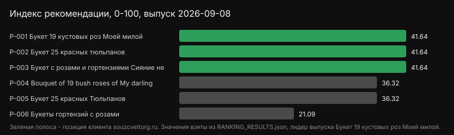
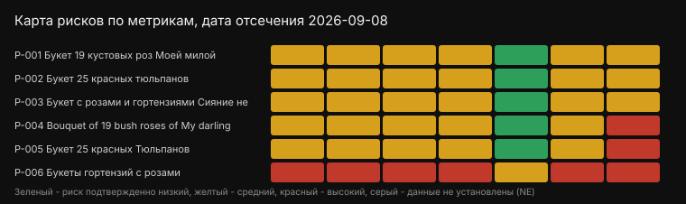

Сравнение 6 товаров по 7 метрикам. Основной показатель - confirmed weighted points, неподтвержденные строки не приравниваются к нулю.
Поставщики позиций в данной выборке: СоюзЦветТорг, Flowwow, Новая Голландия, roza4u.ru. Регион: Москва.
| Товар | Балл | Покрытие | Поставщик |
|---|---|---|---|
| Букет 19 кустовых роз Моей милой | 41.64 | 100% | СоюзЦветТорг |
| Букет 25 красных тюльпанов | 41.64 | 100% | СоюзЦветТорг |
| Букет с розами и гортензиями Сияние небес | 41.64 | 100% | СоюзЦветТорг |
| Bouquet of 19 bush roses of My darling | 36.32 | 100% | Flowwow |
| Букет 25 красных Тюльпанов | 36.32 | 100% | Новая Голландия |
| Букеты гортензий с розами | 21.09 | 100% | roza4u.ru |

